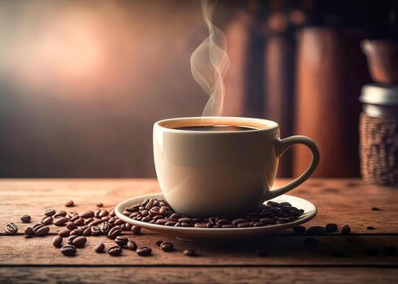

Why Millions of People Start Their Day with Coffee

Coffee is one of the most popular beverages in the world. People enjoy it because of its rich flavor and the energy it provides.
From espresso to cappuccino, there are many different ways to prepare coffee. Every country has its own traditions and favorite brewing styles.
Benefits of Drinking Coffee
Studies suggest that moderate coffee consumption may provide:
- Increased energy and alertness.
- Improved concentration.
- A rich source of antioxidants.
- A pleasant and relaxing experience.
Popular Coffee Drinks
Here are some favorites among coffee lovers:
- Espresso
- Cappuccino
- Latte
- Americano
- Mocha
You can learn more about coffee culture on Wikipedia.